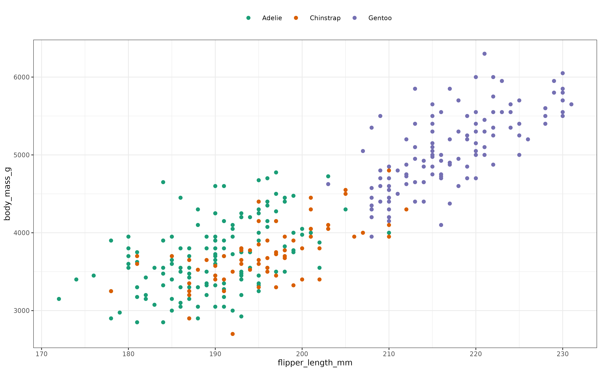
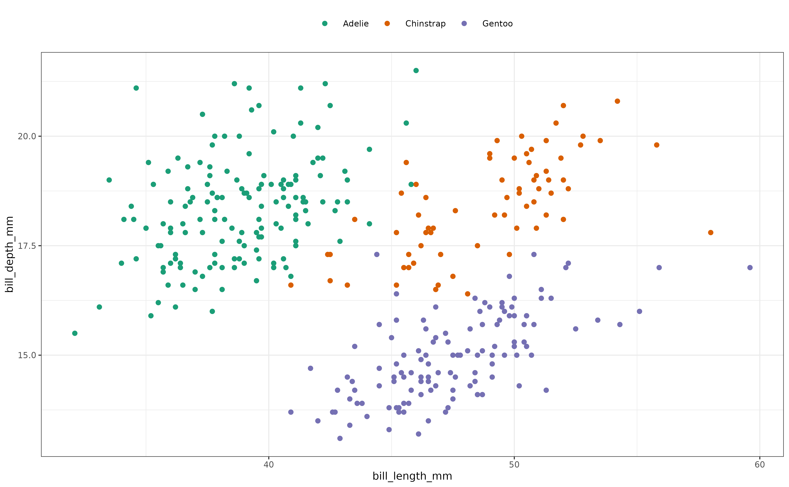
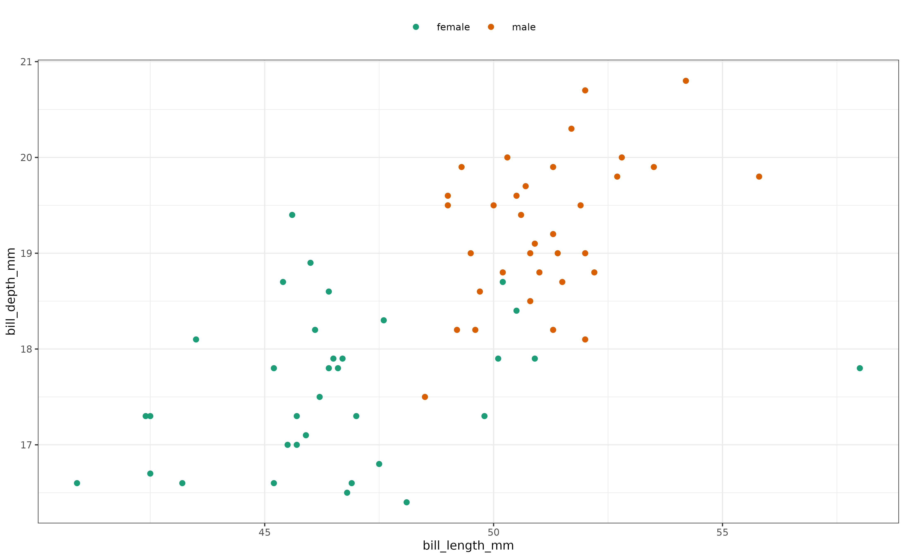

More `boRing` Examples
Jason M. Graham
Simon Garnier
2024-05-10
examples.RmdThis vignette uses the penguins data set from the palmerpenguins
package by Allison Horst, Alison Hill, and Kristen
Gorman to demonstrate features of boRing.
# install.packages("palmerpenguins")
# install.packages("ggplot2")
library(palmerpenguins)
library(ggplot2)
library(boRing)The penguins data frame contains observations about
penguins consisting of year, species, sex, name of island where a bird
was observed, and four physical measurements.
| species | island | bill_length_mm | bill_depth_mm | flipper_length_mm | body_mass_g | sex | year |
|---|---|---|---|---|---|---|---|
| Adelie | Torgersen | 39.1 | 18.7 | 181 | 3750 | male | 2007 |
| Adelie | Torgersen | 39.5 | 17.4 | 186 | 3800 | female | 2007 |
| Adelie | Torgersen | 40.3 | 18.0 | 195 | 3250 | female | 2007 |
| Adelie | Torgersen | NA | NA | NA | NA | NA | 2007 |
| Adelie | Torgersen | 36.7 | 19.3 | 193 | 3450 | female | 2007 |
| Adelie | Torgersen | 39.3 | 20.6 | 190 | 3650 | male | 2007 |
Note that there are missing values for some observations.
If we plot the body mass of penguins versus their flipper length, we can observe some clustering by species.
penguins |>
ggplot(aes(x = flipper_length_mm, y = body_mass_g, color = species)) +
geom_point(size = 1) +
scale_color_brewer(palette = "Dark2") +
guides(color = guide_legend(position = "top")) +
theme_bw(base_size = 7) +
theme(
legend.title = element_blank()
)
#> Warning: Removed 2 rows containing missing values or values outside the scale range
#> (`geom_point()`).
This data appears to lack unimodality. Let’s compute the boringness index for the plotted data:
penguins |>
dplyr::select(flipper_length_mm, body_mass_g) |>
as.matrix() |>
boring(na_rm = TRUE, conf_level = 0.95)
#> estimate lower_ci upper_ci
#> 0.2271832 0.1241233 0.3253939The boringness index value reflects what we observed in the plot. Contrast the previous result with the boringness index value obtained when we restrict to only the Gentoo species:
penguins |>
dplyr::filter(species == "Gentoo") |>
dplyr::select(flipper_length_mm, body_mass_g) |>
as.matrix() |>
boring(na_rm = TRUE, conf_level = 0.95)
#> estimate lower_ci upper_ci
#> 0.8290167 0.7641294 0.8772953This boringness index value is consistent with the increased unimodality of the data when observing only the single species of Gentoo.
As another illustration, let’s examine the relationship between the bill length and bill depth of the penguins:
penguins |>
ggplot(aes(x = bill_length_mm, y = bill_depth_mm, color = species)) +
geom_point(size = 1) +
scale_color_brewer(palette = "Dark2") +
guides(color = guide_legend(position = "top")) +
theme_bw(base_size = 7) +
theme(
legend.title = element_blank()
)
#> Warning: Removed 2 rows containing missing values or values outside the scale range
#> (`geom_point()`).
Again, this data appears to lacks unimodality but now there is also lower density in the center of the cloud of data points. Let’s compute the boring metric for the plotted data:
penguins |>
dplyr::select(bill_length_mm, bill_depth_mm) |>
as.matrix() |>
boring(na_rm = TRUE, conf_level = 0.95)
#> estimate lower_ci upper_ci
#> -0.20111434 -0.30075022 -0.09713572The negative value for the boringness index is consistent with what we observed in the plot.
It may be interesting to consider what is happening with regard to the bill length and bill depth for the Chinstrap species:
penguins |>
dplyr::filter(species == "Chinstrap") |>
dplyr::select(bill_length_mm, bill_depth_mm) |>
as.matrix() |>
boring(na_rm = TRUE, conf_level = 0.95)
#> estimate lower_ci upper_ci
#> 0.6132763 0.4390492 0.7430520A relatively low value of unimodality is predicted. This may be explained looking at the difference in the measurements across sex:
penguins |>
dplyr::filter(species == "Chinstrap") |>
dplyr::select(bill_length_mm, bill_depth_mm, sex) |>
ggplot(aes(x = bill_length_mm, y = bill_depth_mm, color = sex)) +
geom_point(size = 1) +
scale_color_brewer(palette = "Dark2") +
guides(color = guide_legend(position = "top")) +
theme_bw(base_size = 7) +
theme(
legend.title = element_blank()
)
Finally, we compute the boringness index for all four physical measurements: